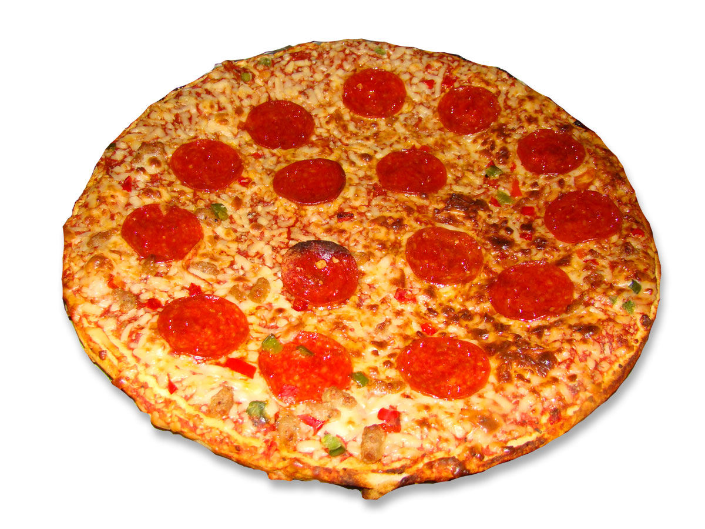

Pizza Recipe

Your finished prouct pizza should look similar to the photo above. Cheese, pepperoni, and marinara
sit deliciously on top of your dough. Garlic powder, red pepper flakes, and shredded parmesean
cheese are perfect add-ons for this dish.
INGREDIENTS
- Pizza dough
- Pepperoni
- Mozzarella
- Marinara
Optional Add-Ons
- Red Pepper Flakes
- Parmesean Cheese
- Garlic Powder
DIRECTIONS
- Preheat Oven to 450 degrees Fahrenheit
- Shape dough into large circle
- Add Marinara on Dough
- Add Cheese on top of Marinara
- Add Pepperoni
- Cook in oven for 20 minutes
BACK TO MAIN